/math-7c08c4305c2dca88747f3e68c927c803.png "b_0*x(n)+b_1*x(n-1)+ \cdots +b_N*x(n-N)-a_0*y(n)-a_1*y(n-1)- \cdots -a_M*y(n-M) = 0")
IIR(Infinite Impulse Response、無限インパルス応答)フィルタは次の図のように、フィードバックを行うデジタルフィルタです。
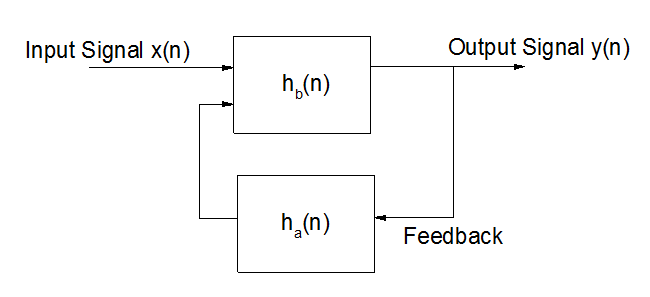
デジタルフィルタはよく、差を表す数式で表記され、入力シグナルと出力シグナルの関係を定義します。
このように変形します。
/math-642fe61653452fecb486feedc5c5892e.png "y(n) = \frac{1}{a_0} \left ( b_0*x(n)+b_1*x(n-1)+ \cdots +b_N*x(n-N)-a_1*y(n-1)-a_2*y(n-2)- \cdots -a_M*y(n-M) \right ) = \frac{1}{a_0} \left ( \sum_{i=0}^N b_i*x(n-i) - \sum_{j=1}^M a_j*y(n-j) \right )")
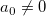
の中で、Nはフィードフォワードフィルタの順番、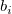
はフィードフォワードの係数、Mはフィードバックフィルタの順番、/math-2aecb1dc57e87620a373d19b0a889efb.png "a_i") はフィードバックの係数、x(n)は入力シグナル、y(n)は出力シグナルを表します。
はフィードバックの係数、x(n)は入力シグナル、y(n)は出力シグナルを表します。 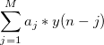
の表記がフィードバックを表します。OriginではIIRフィルタの出力表現が4種類あります。
IIRフィルタの変換関数はz-領域での2つの多数項の複合式z - 1で表わされます。IIRフィルタの変換フィルタを見つけるには、上記数式を以下のように並び替えます。
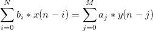
z-変換は次のように定義されます。
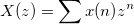
z-変換を数式の両辺から取り除くと次のようになります。
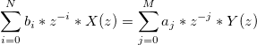
IIRフィルタの変換関数をz-領域内で表わすと、次のようになります。
/math-18f3ad22a91f07dff439dd4c90217a8b.png "H(z) = \frac{Y(z)}{X(z)} = \frac{\sum_{i=0}^N b_iz^{-i}}{\sum_{j=0}^M a_jz^{-j}}")
上記変換関数が示すように、分子はゼロの位置を示して分母は極の位置を示しています。つまり、変換関数はゼロ-極-ゲイン形式に書き直す事ができます。
/math-61c7f59968fd3b0c2f963ef65644abc4.png "H(z) = \frac{q(z)}{p(z)} = k*\frac{(z-q_1)(z-q_2) \cdots (z-q_N)}{(z-p_1)(z-p_2) \cdots (z-p_M)} = k* \frac{\prod_{i=1}^N (z-q_i)}{\prod_{j=1}^M (z-p_j)}")
ここで、変換関数のkはゲインを、
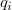
と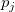
はゼロと極をそれぞれ表しています。フィルタシステムの状態空間は次のように定義されます。
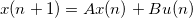
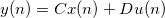
ここで、u(n)は入力、x(n)は状態ベクトル、y(n)は出力、Aはm×mの行列、mはフィルタの順番、Bは列ベクトル、Cは行ベクトル、Dはスケーラを示しています。
デジタルフィルタ変換関数に対応する第二順序セクションは以下のように書き表されます。
/math-bf37bbe49389eafcaa3832886b94d32c.png "H(z) = g \prod_{k=1}^L H_k(z) = g \prod_{k=1}^L \frac{b_{0k}+b_{1k}*z^{-1}+b_{2k}*z^{-2}}{a_{0k}+a_{1k}*z^{-1}+a_{2k}*z^{-2}}")
ここで、gはゲイン、
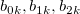
は分子係数、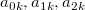
は分母係数を示しています。もしフィルタ順序mが偶数なら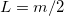
に、mが奇数なら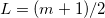
になります。すると、SOS は以下のようなL×6行列で表記できます。/math-e75c8ff51478129ca380790b69a885fa.png "SOS = \begin{bmatrix} b_{01} & b_{11} & b_{21} & a_{01} & a_{11} & a_{21} \\ b_{02} & b_{12} & b_{22} & a_{02} & a_{12} & a_{22} \\ b_{03} & b_{13} & b_{23} & a_{03} & a_{13} & a_{23} \\ \vdots & \vdots & \vdots & \vdots & \vdots & \vdots \\ b_{0L} & b_{1L} & b_{2L} & a_{0L} & a_{1L} & a_{2L} \\ \end{bmatrix}")
IIRフィルタを設計する一般的な手順は次の通りです。
| 手法 | 大きさの二乗の反応関数 | アナログフィルタの転嫁関数 |
|---|---|---|
| Butterworth | 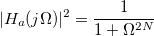 |
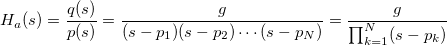 |
| Chebyshev Type I | 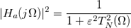 |
|
| Chebyshev Type II | 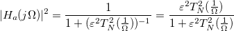 |
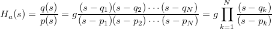 |
| Elliptic | 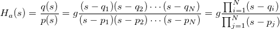 |
上記表で、 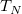 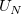 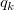 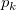/math-2e9ef3d6ef62a48d70720728d3e90e31.png "\Omega") は周波数、Nはフィルタの順番、
は周波数、Nはフィルタの順番、 /math-f8b1c5a729a09649c275fca88976d8dd.png "\varepsilon") は通過帯域の周波数反応内での最大振幅、
は通過帯域の周波数反応内での最大振幅、
ローパスフィルタをハイパス、バンドパス、バンドストップフィルタに変換するには希望のカットオフ周波数を使用します。Originでは、状態空間法が周波数変換計算において使用されます。ローパスフィルタの元の変換関数は 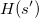 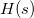
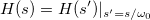
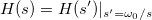
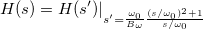
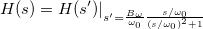
ここで、 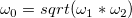 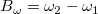 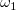 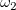
アナログフィルタをデジタルフィルタに変換するのに、Originは次式で定義される双線形変換で定義します。
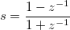
Originは前方と後方フィルタリングを行う事ができ、これはゼロ段階歪みとしいう結果になります。まず、これはデータを前方でフィルタリングし、それからフィルタをかけたデータを逆順にしてからフィルタを通過させます。